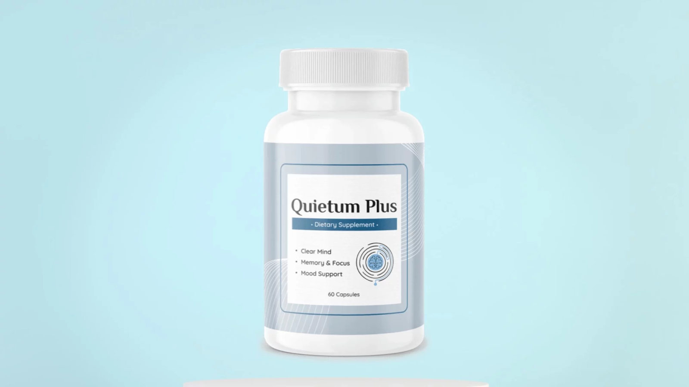

((QUIETUM PLUS Review)) üö®BE CAREFULüö® QUIETUM PLUS REVIEWS - QUIETUM PLUS TINNITUS

Age-related hearing decline and tinnitus affect millions seeking safe, natural solutions for improving auditory wellness. Supplements like Quietum Plus promise relief through their formulations, but navigating options can be challenging.
This review aims to analyze the evidence on Quietum Plus thoroughly to help readers make optimal decisions for their needs. We examine the ingredients, proposed benefits, scientific research, safety considerations, and unfiltered customer feedback objectively.
Our goal is not to promote Quietum Plus as a cure-all but to empower consumers with unbiased insights and details to evaluate its suitability. With so many hearing health supplements available today marketed using bold claims, we believe scrutinizing the science and real-life customer experiences is crucial. This enables factual decision-making around incorporating Quietum Plus versus alternatives.
Our sole focus is providing readers with the tools and unfiltered information necessary to determine what best supports their hearing health goals.
Quietum Plus Reviews: Ingredients That Support Ear Health Examined
I’m sure you want the straight facts – what is this stuff, does it really work, is it safe? I get it, and I’ve done my homework to get you the details. In this review, I’ll walk through how Quietum Plus aims to improve ear health, the science and research behind its ingredients, potential pros and cons to consider, pricing, and any bonus products that come along with it.
My goal is to summarize everything in simple terms, so you can determine if Quietum Plus might be worth a shot for you. I’ll share the facts objectively, but also give you my personal take since I know how frustrating ear problems can be. Sound good? Let’s dive into the Quietum Plus reviews.
Supplement Name | Quietum Plus |
Main Purpose | Tinnitus Relief |
Formulation | Capsules |
Active Ingredients | ▪️ Maca root ▪️ Epimedium ▪️ Dong Quai ▪️ Ginger ▪️ Catuaba powder ▪️ Ashwagandha ▪️ Asparagus ▪️ L-Tyrosine ▪️ L-Arginine ▪️ Vitamin A ▪️ Vitamin B ▪️ Zinc ▪️ Piperine ▪️ Muira Puama ▪️ Damiana ▪️ Tribulus Terrestris ▪️ Sarsaparilla Root |
Benefits | ▪️ Address the cause of tinnitus or ear ringing ▪️ Restore age-related hearing loss ▪️ Protection to inner ear cells from any damage ▪️ Improve brain health ▪️ Help with anxiety and depression |
Manufacturing Standards | ▪️ GMP certification ▪️ FDA-registered facility ▪️ GMO-free ▪️ Natural Ingredients |
Total no of capsules | 60 capsules |
Recommended Usage | 2 capsules per day |
Warning | ▪️ Not Intended for Person under 18 yrs ▪️ NotI ntended for pregnant ladies, and Nursing mothers |
Money Back Guarantee | 60-days Money Back Guarantee |
Pricing | ▪️ 1 bottle package: 30 day supply: $69 per bottle ▪️ 3 bottles package: 90 day supply: $59 per bottle + free bonuses ▪️ 6 bottles package: 180 day supply: $49 per bottle + free bonuses |
Bonus | ▪️ BONUS #1 – 1-Minute Natural Tips To Hear Like a Ninja ▪️ BONUS #2 – How to Get the Best Sleep of Your Life in Just 7 Days |
Availability | Only Through Official Website |
Official Site |
What Is Quietum Plus?
Quietum Plus is a natural dietary supplement that includes a potent plant and vitamins based blend which helps to treat the root cause of ear ringing and tinnitus. It also helps to clear the mind, and improve memory, focus, and mood support. The manufacturer assures that the supplement is manufactured in an FDA-approved facility by following all GMP guidelines, so it is free from any sort of side effects.
It contains 100% natural ingredients such as Maca root, Tribulus Terrestris, Dong Quai, Ginger, Catuaba Powder, Ashwagandha, Piperine, and more which will be discussed in the next section of our Quietum Plus reviews.
Quietum Plus comes in an easy-to-swallow capsule form and it is non-GMO and vegan-friendly too. A Quietum Plus bottle contains 60 Gluten-free capsules that’s enough for a month’s consumption.
Quietum Plus Ingredients: What Makes Up The Supplement?
Quietum Plus ear ringing relief consists of 100% natural ingredients. Some of the key ingredients included in the supplement are:

Maca root: Maca root consists of vitamins and minerals that are proven to be effective in addressing the real cause of tinnitus. It can restore your ear’s health and prevent oxidative stress caused by free radicals.
Epimedium: Epimedium consists of lots of antioxidants that help to restore the damage caused to your inner ear due to oxidative stress. It also has antidepressant effects and helps regulate neuroinflammation.
Dong Quai: It is a herb that has zillions of health benefits. Dong Quai helps sharpen your ear health and also improves your cognitive health.
Ginger: Ginger has anti-inflammatory properties and contains strong antioxidants. So it promotes nerve regeneration and protects against free radicals.
Catuaba powder: Catuaba powder improves blood circulation to your inner ear and this herb has strong neuroprotective qualities. It also helps with nervousness, sleep disorders, and improves sexual health.
Ashwagandha: It is a herb that is widely used to treat a variety of health issues. Ashwagandha is mostly ayurvedic herb which is a strong adaptogen that prevents cell degeneration.
Asparagus: Asparagus contains folate that helps protect your inner ear from toxins and free radicals. It can protect nerve tissue inside your ear and promote cognitive health.
L-Tyrosine: L-Tyrosine not only helps to improve hearing health, but it also has many other health benefits. It is a good mood booster, it helps balance blood pressure and even helps with anxiety and depression.
Apart from all these herbs, Quietum Plus capsules also contain L-Arginine, Vitamin A, Vitamin B, Zinc, Piperine, Muira Puama, Damiana, etc. All these ingredients are sourced naturally and have been processed under strict, sterile, and precise standards. Also, each of them is scientifically proven to be efficient in addressing the actual cause of ear-related issues.
Click Here to Order Quietum Plus From Official Website
How Does The Supplement Work?
Quietum Plus dietary supplement works by protecting your ears from any kind of damage. It is a natural solution for tinnitus and ear ringing. As we have mentioned above, the supplement consists of 100% plant-based ingredients that are efficient in treating any ear-related issues and are discovered by scientists to treat the real root cause of tinnitus.
Tinnitus is a condition that is linked to the nerves that carry electrical signals and sounds from your inner ear cells to your brain networks. The ingredients included in the Quietum Plus can regenerate and rebuild if any damage is caused to these nerves.
Quietum Plus ear ringing relief formula also helps to improve the blood circulation to your inner ear which strengthens the inner ear cells and provides protection against the damage caused by free radicals. Manufacturer also claims that the Quietum Plus tinnitus relief supplement can improve various cellular processes in your body which provides essential nutrients to the hair cells in your inner ear.
Quietum Plus Benefits
The Quietum Plus reviews shows that the supplements dietary formula is backed by ingredients that have a lot of health benefits. Some of them are:
- The Quietum Plus supplement is formulated to address the root cause of tinnitus and ear ringing.
- It can provide mental clarity and improves your cognitive health.
- The formula consists of antioxidants that can provide protection to your inner ear cells from any damage due to free radicals.
- Quietum Plus can help those people with anxiety and depression.
- It can repair your neuron damage and can restore age-related hearing loss.
Quietum Plus supplement Pros And Cons
Even though the Quietum Plus ear health supplement is recommended to try, you have to check both its pros and cons before using it. Some of the pros and cons of the Quietum Plus are:
Positives
Quietum Plus advanced formula contains natural ingredients that do not cause any side effects.
The supplement is scientifically and clinically proven to treat any ear-related issues.
It is formulated in a strict, sterile, and precise environment and by following all GMP guidelines.
Quietum Plus can also help to improve your brain health.
The ingredients included in the Quietum Plus supplement have antidepressant effects, antioxidant effects, and anti-inflammatory effects.
Negatives
Quietum Plus pills are not ideal for children below 18 years old, pregnant ladies, and nursing mothers.
The supplement is only available to buy through its official website.
Some of the users have experienced mild side effects like headache and dizziness after taking Quietum Plus.
Click Here to Order Quietum Plus From Official Website
How To Use Queitum Plus? Dosage And Instruction To Use!
To get optimal results, the manufacturer recommends taking 2 capsules of Quietum Plus supplement daily with a glass of water. Since consistency is the key to success, the manufacturer also recommends you be consistent in taking Quietum Plus.
So take the supplement for around two to three months continuously as recommended by the manufacturer. Anyway, the supplement is not recommended for children below 18 years old, pregnant ladies, and nursing mothers.
Those who are taking any medications or are under any treatment are recommended to take Quietum Plus supplement only after seeking medical advice. Do not overdose on the supplement, overdosing does not provide faster results rather it might cause harm to your health.
Is Quietum Plus Legit Or Not?
Definitely, Quietum Plus tablets seem to be a legit dietary supplement. Because it is backed with solid scientific and clinical evidence that supports its legitimacy. Also, the customer reviews and user reports of Quietum Plus are the biggest proof of the legitimacy of the product.
Most of the customers have got the desired result after using Quietum Plus. All these reviews and comments are from real customers of Quietum Plus ear ringing relief supplement and are not artificially built testimonials of the marketing team as for other dietary formulas that are available in the market.
How And Where To Order Quietum Plus?
The manufacturer is selling the original Quietum Plus hearing health formula through its official product website only. The supplement is not available to purchase through any other third-party websites like Amazon, eBay, or through any retail stores.
But it’s come to notice that some people are trying to sell the imitated or duplicate versions of the Quietum Plus bottles through other third-party platforms at cheaper rates. Even though you can avail it at a low price, you didn’t get the result that you expected from them. Also, they might cause harm to your overall health.
So to ensure that you are ordering the original formula of the Quietum Plus capsules, place your order through the official website only. The manufacturer also provides many discounts and offers like a refund policy and free bonuses for those who purchase through the official product website. Some of the Quietum Plus discount packages now available to purchase on the official website are:

Click Here to Order Quietum Plus From Official Website
Also, there is no shipping fee or other hidden charges if you order the supplement through its official website.
Quietum Plus Customer Reviews And Complaints
Most of the Quietum Plus customer reviews are positive. The majority of Quietum Plus users have reported that they have got the desired results after using the supplement as instructed by the manufacturer. Thousands of users have already used the formula and got exact results without any adverse effects on their health.
But a handful of customers reported that they haven’t got the expected results after using it. This is because of the inconsistent use of the supplement. You have to use them regularly for 2-3 months continuously as per the instructions provided by the manufacturer.
Also, some users also complained that they are facing an inconvenience to order the supplement as it becomes out of stock frequently. The supplement is becoming out of stock due to its huge demand among regular customers. So if you are facing this issue, you can order a multi bottles package at the time of placing the order.
Quietum Plus Refund Policy
Quietum Plus ear health formula is backed with a 100%, 60-day satisfaction guarantee. So if any of you are not satisfied with the results or if you haven’t got the results claimed on the official product website, then you can ask for all your money back.
The manufacturer assures you that they will provide all your money if you haven’t got the desired result. Just let the customer support team know about your concerns within 60 days of purchase and claim a refund.
Quietum Plus Bonuses
The manufacturer offers two free bonuses along with 6 bottles package or 3 bottles package of Quietum Plus. They are:

BONUS #1 – 1-Minute Natural Tips To Hear
Like a Ninja
1-Minute Natural Tips To Hear Like a Ninja is an ebook that’s worth $97 and you will be getting it for free as Quietum Plus bonus. This digital book helps you to discover the tips and hacks that help to improve your hearing. You will learn about 3 yoga poses that help you to tackle hearing loss. It will let you know about the simple tips that make your earbuds healthy and ways to clear any ear infection overnight.
BONUS #2 – How to Get the Best Sleep
of Your Life in Just 7 Days
How to Get the Best Sleep of Your Life in Just 7 Days is a limited edition book that’s worth $79 and you will get it for free along with Quietum Plus’ 3 bottles and 6 bottles packages. The book reveals 3 techniques that are approved by doctors and helps you to fall asleep in just a few minutes.
You will know about the ideal position to sleep that makes you sleep faster. The book also helps you to find the 4 mouth and throat quick exercises that help to reduce snoring and 5 heavy sleep pressure points that help to get better sleep through the night.
Final Verdict – Quietum Plus Reviews
From reviewing the Quietum Plus supplement, it seems to be a natural solution for those who are in search of a legit formula for addressing tinnitus or ear ringing. It consists of scientifically proven ingredients that are efficient in treating ringing sounds in ears and other cognitive issues.
Quietum Plus tinnitus relief capsule has been used by many customers and based on their feedback and other Quietum Plus reviews, it is safe to use as most of them have got the results that they expected. The supplement has been manufactured in a strict, sterile, and precise environment approved by FDA and does not contain any artificial stimulants or harmful chemicals. So it is free from side effects.
Also, the manufacturer offers a 100% money-back guarantee for those who are not satisfied with the results. That is, the manufacturer is confident enough about the supplement results. In short, the Quietum Plus is worth a shot.
Click Here to Order Quietum Plus From Official Website
Frequently Asked Questions
1. Is Quietum Plus supplement vegan-friendly?
Yes, the manufacturer of the supplement assures that the Quietum Plus is vegan-friendly, non-GMO, and gluten-free.
2. Does Quietum Plus supplement help with age-related hearing loss?
Quietum Plus supplement consists of natural ingredients that are proven to improve age-related hearing loss.
3. Can I take a Quietum Plus supplement with other medications?
If you are taking any other medications, then it’s better to seek medical advice before taking Quietum Plus capsules.
4. I am 13 years old, can I take Quietum Plus?
No, the Quietum Plus supplement is intended for people above 18 years old. Children below 18 years old, pregnant ladies, and lactating women can’t take the supplement.
5. How long does it take to show results?
The manufacturer assures that if you take the supplement as per the instructions, then you will get the result within 2 to 3 months.
Click Here to Order Quietum Plus From Official Website
6 SECOND MORNING RITUAL ((THE TRUTH!)) MITOLYN REVIEWS - MITOLYN REVIEWS COMPLAINTS

When it comes to maintaining optimal health, energy levels, and cognitive function, many people turn to natural solutions to stay active and sharp. One such product that has recently gained attention is Mitolyn, a dietary supplement designed to enhance mitochondrial function, boost energy, and improve overall well-being.
Mitolyn is formulated with key ingredients such as CoQ10, L-carnitine, and alpha-lipoic acid. These compounds work together to support cellular energy production, reduce oxidative stress, and improve mental clarity. The primary benefit of Mitolyn is its ability to enhance mitochondrial health—the powerhouse of your cells—leading to increased energy and better endurance. Users often report feeling more focused, with greater stamina and faster recovery times.
In addition to its physical benefits, Mitolyn also supports cognitive health, helping to reduce mental fog and improve focus. This makes it an appealing choice for anyone looking to boost both their physical and mental performance.
However, as with any supplement, individual results may vary. Some users might experience mild gastrointestinal discomfort or sleep disturbances, especially if the product is taken late in the day.
Overall, Mitolyn appears to be a promising supplement for those seeking to boost energy, enhance mental clarity, and improve performance. If you're looking for a natural way to support mitochondrial health and vitality, Mitolyn is certainly worth considering.
Mitolyn: At a Glance
Feature | Details |
Product Type | Dietary Supplement |
Primary Benefits | Boosts energy, enhances mental clarity, improves physical performance |
Key Ingredients | CoQ10, L-carnitine, Alpha-lipoic acid, Pterostilbene |
Recommended Dosage | 1 capsule per day |
Price Range | $89 - $414 (depending on the package) |
Money-Back Guarantee | 60-Day Money-Back Guarantee |
Customer Rating | 4.9 out of 5 |
Shipping | Free U.S. Shipping (on select packages) |
Available On |
What is mitolyn?
Mitolyn is a dietary supplement marketed as a solution to support cellular health, energy production, and overall vitality. It is formulated with a blend of natural ingredients that are purported to enhance mitochondrial function, which plays a crucial role in energy metabolism. Mitochondria, often referred to as the powerhouse of cells, are responsible for converting nutrients into energy. With age, mitochondrial efficiency tends to decline, leading to fatigue and reduced physical performance.
The key ingredients in Mitolyn typically include antioxidants like CoQ10, Pterostilbene, and other compounds that aim to protect mitochondria from oxidative stress and support their regeneration. Proponents suggest that this supplement may improve energy levels, cognitive function, and overall well-being.
While early anecdotal reports highlight potential benefits, it's important to note that, as with any supplement, clinical evidence supporting these claims is limited. As always, consulting a healthcare professional before starting any new supplement is advised.
Feel the Difference – Get Mitolyn Delivered to Your Door!
Key Ingredients in Mitolyn: Comprehensive Analysis Backed by Science
Mitolyn is a popular dietary supplement designed to promote mitochondrial health, boost energy production, and enhance overall well-being. Mitochondria, the powerhouse of our cells, are critical for energy metabolism, and their function can decline over time, leading to fatigue and reduced physical performance. This decline is often attributed to oxidative stress and age-related cellular damage. Mitolyn seeks to address these issues with a blend of scientifically-backed ingredients aimed at supporting mitochondrial function. Below is a comprehensive analysis of the key ingredients found in Mitolyn, based on scientific research.
Coenzyme Q10 (CoQ10)
CoQ10, also known as ubiquinone, is a vital antioxidant that plays a central role in the production of adenosine triphosphate (ATP), the primary energy currency of cells. It is found in the mitochondria, where it facilitates electron transport during oxidative phosphorylation, which is essential for energy production.
Scientific Backing: Research shows that CoQ10 levels naturally decline with age and in certain conditions like cardiovascular disease. Supplementing with CoQ10 has been linked to improved energy levels, enhanced athletic performance, and better heart health. In a study published in the American Journal of Clinical Nutrition, CoQ10 supplementation was found to improve mitochondrial function in older adults, leading to increased physical endurance and reduced fatigue.
Pterostilbene
Pterostilbene, a compound chemically related to resveratrol, is a polyphenol found in small quantities in foods like blueberries. It is known for its antioxidant and anti-inflammatory properties. Pterostilbene is believed to help improve mitochondrial function and protect against oxidative stress.
Scientific Backing: Studies suggest that pterostilbene may have a more potent effect than resveratrol due to its higher bioavailability. Research published in The Journal of Nutritional Biochemistry has shown that pterostilbene can enhance mitochondrial efficiency, increase ATP production, and even improve cognitive function. Pterostilbene has also been shown to have neuroprotective effects, potentially improving brain health and function.
Alpha-Lipoic Acid (ALA)
Alpha-lipoic acid is a powerful antioxidant that exists in both water-soluble and fat-soluble forms, allowing it to combat oxidative stress in various parts of the cell. It plays a crucial role in mitochondrial bioenergetics and helps regenerate other antioxidants, such as vitamins C and E.
Scientific Backing: Numerous studies confirm the role of ALA in mitochondrial function. A study published in Free Radical Biology and Medicine highlighted ALA’s ability to improve mitochondrial efficiency and energy production. Furthermore, ALA has been shown to protect mitochondria from damage caused by oxidative stress, which can help reduce the risk of chronic diseases associated with aging.
L-Carnitine
L-carnitine is an amino acid derivative that helps transport fatty acids into the mitochondria, where they are burned for energy. This process is crucial for fat metabolism and overall energy production. It has been widely studied for its role in improving exercise performance and reducing fatigue.
Scientific Backing: Clinical trials have demonstrated that L-carnitine supplementation can enhance fat oxidation and increase mitochondrial energy production. A study in The American Journal of Clinical Nutrition found that L-carnitine supplementation significantly increased endurance and reduced muscle soreness in athletes. Furthermore, it has been shown to improve mitochondrial function in older adults, potentially combating age-related energy decline.
Magnesium
Magnesium is an essential mineral involved in hundreds of biochemical reactions, including those that support mitochondrial function. It is required for the synthesis of ATP and helps maintain the structural integrity of mitochondria.
Scientific Backing: Research highlights the importance of magnesium in cellular energy metabolism. A study published in The Journal of Nutrition found that magnesium deficiency is linked to impaired mitochondrial function and decreased ATP production. Supplementing with magnesium has been shown to improve energy levels and mitochondrial health, especially in individuals with low magnesium levels.
Mitolyn combines a variety of scientifically-backed ingredients aimed at supporting mitochondrial health and boosting energy production. CoQ10, pterostilbene, alpha-lipoic acid, L-carnitine, and magnesium are all known for their roles in enhancing mitochondrial function, protecting against oxidative damage, and improving overall vitality. While these ingredients show promise in supporting energy production and mitigating age-related decline, it is essential to remember that supplements should complement a healthy lifestyle, including a balanced diet and regular exercise.
Before starting any new supplement regimen, it is advisable to consult with a healthcare professional, especially for those with pre-existing conditions or who are taking other medications.
Feel the Difference – Get Mitolyn Delivered to Your Door!
How Does Mitolyn Work?
Mitolyn is a dietary supplement designed to support mitochondrial health, energy production, and overall vitality. At its core, Mitolyn works by enhancing mitochondrial function, which is essential for producing the energy needed for cellular activities. Mitochondria, often referred to as the "powerhouses" of cells, convert nutrients into adenosine triphosphate (ATP), the primary energy source for bodily functions.
The supplement’s effectiveness lies in its combination of ingredients that target various aspects of mitochondrial function. Coenzyme Q10 (CoQ10) plays a crucial role in the electron transport chain within mitochondria, facilitating ATP production. Alpha-lipoic acid (ALA) helps protect mitochondria from oxidative stress while supporting ATP synthesis. L-carnitine aids in the transport of fatty acids into the mitochondria for energy production, improving fat metabolism.
Additionally, antioxidants like pterostilbene and magnesium help safeguard mitochondria from damage caused by free radicals, promoting healthier, more efficient cellular function. This synergistic blend of ingredients helps enhance energy levels, reduce fatigue, and improve overall well-being by ensuring that mitochondria operate at their optimal capacity.
Mitolyn supports mitochondrial health and energy production through a combination of antioxidants, nutrients, and compounds that promote cellular vitality and protect against oxidative damage.
Benefits of Using Mitolyn: A Comprehensive Overview
Mitolyn is a dietary supplement formulated to support mitochondrial health, boost energy levels, and enhance overall vitality. Its blend of scientifically backed ingredients targets various aspects of mitochondrial function, which are critical for maintaining energy production and cellular health. Here are the key benefits of using Mitolyn:
Enhanced Energy Levels
One of the primary benefits of Mitolyn is its ability to support the mitochondria, the energy-producing organelles in cells. With ingredients like Coenzyme Q10 (CoQ10) and L-carnitine, Mitolyn aids in optimizing ATP production. ATP is the currency of cellular energy, and a sufficient supply is essential for maintaining stamina and energy levels throughout the day. As a result, users often report feeling more energetic, with a reduced sense of fatigue.
Improved Exercise Performance
Mitolyn can also improve physical performance, particularly during endurance activities. L-carnitine, which is included in the formula, plays a crucial role in fat metabolism by transporting fatty acids into the mitochondria for energy production. This process can enhance fat oxidation, providing a steady energy source during prolonged physical exertion. Studies have shown that L-carnitine supplementation may improve exercise endurance and reduce muscle soreness, making Mitolyn beneficial for athletes and active individuals.
Cognitive Support and Mental Clarity
Mitochondria are present in high concentrations in brain cells, where they supply the energy required for cognitive functions. By supporting mitochondrial function, Mitolyn may help enhance mental clarity, focus, and memory. Ingredients like pterostilbene, an antioxidant, may also support brain health by protecting brain cells from oxidative damage. Regular use of Mitolyn could improve mental performance and help prevent age-related cognitive decline.
Reduced Fatigue and Improved Recovery
The antioxidant properties of ingredients like alpha-lipoic acid (ALA) help reduce oxidative stress, which is a significant contributor to fatigue. By protecting the mitochondria from free radical damage, Mitolyn promotes better recovery after physical or mental exertion. This means users may experience less overall tiredness and quicker recovery times, whether after a workout or a busy workday.
Support for Healthy Aging
As we age, mitochondrial function naturally declines, leading to a reduction in cellular energy production and an increase in oxidative damage. Mitolyn's blend of antioxidants, including CoQ10, ALA, and pterostilbene, helps combat this age-related mitochondrial dysfunction. By protecting and supporting mitochondrial health, Mitolyn may slow down the effects of aging, reducing the likelihood of chronic conditions linked to mitochondrial decline, such as fatigue, cognitive decline, and muscle weakness.
Improved Fat Metabolism
L-carnitine, a key ingredient in Mitolyn, enhances fat metabolism by facilitating the transport of fatty acids into the mitochondria, where they are burned for energy. This not only boosts energy but also promotes the use of stored fat as a source of fuel. For individuals aiming to lose weight or maintain a healthy weight, Mitolyn may support fat loss by encouraging the body to utilize fat more efficiently.
Antioxidant Protection for Cellular Health
Mitolyn contains potent antioxidants like pterostilbene and ALA that protect cells from oxidative stress, which can damage mitochondria and accelerate aging. By neutralizing free radicals, these antioxidants help maintain cellular integrity, improve overall health, and reduce the risk of chronic diseases. This protection contributes to a healthier, more vibrant body, enhancing the effects of energy production, recovery, and longevity.
Mitolyn offers a wide range of benefits, from boosting energy levels and improving physical performance to supporting cognitive function and healthy aging. By promoting mitochondrial health through a combination of scientifically supported ingredients, Mitolyn provides a holistic approach to overall vitality and well-being. Whether you're an athlete looking to improve endurance or simply someone seeking to boost daily energy levels, Mitolyn can help you feel your best. However, as with any supplement, it’s essential to consult with a healthcare professional before starting a new regimen.
Mitolyn Side Effects: Is It Safe?
Mitolyn is a dietary supplement designed to support mitochondrial health, boost energy production, and promote overall well-being. While it contains a blend of natural ingredients that are generally well-tolerated, it’s important to consider potential side effects before incorporating it into your routine.
Potential Side Effects
Gastrointestinal Distress: Some individuals may experience mild stomach discomfort, bloating, or nausea when taking Mitolyn, especially if taken on an empty stomach. To minimize these effects, it's recommended to take the supplement with food.
Allergic Reactions: Though rare, some users may be allergic to one of the ingredients, particularly the antioxidants or herbal compounds like pterostilbene. Symptoms may include rash, itching, or swelling. Discontinue use immediately if any signs of an allergic reaction occur and consult a healthcare provider.
Interactions with Medications: Mitolyn contains CoQ10 and alpha-lipoic acid, both of which may interact with certain medications, particularly blood thinners or diabetes medications. Always consult your healthcare provider before using Mitolyn if you are on medication.
Sleep Disturbances: Due to its energizing effects, some users may experience difficulty falling asleep if taken too close to bedtime.
Is Mitolyn Safe?
For most people, Mitolyn is considered safe when used as directed. However, individuals with pre-existing health conditions or those taking medications should consult a healthcare professional before starting any new supplement regimen to avoid potential interactions.
Feel the Difference – Get Mitolyn Delivered to Your Door!
Mitolyn Customer Reviews and Complaints: Overall Rating 4.9/5
Mitolyn has received an impressive overall rating of 4.9 out of 5 from customers, reflecting its effectiveness in boosting energy, improving mental clarity, and enhancing workout performance. Many users report feeling more energized throughout the day, with quicker recovery times and better focus. The supplement is praised for its high-quality ingredients and noticeable benefits. Some users have mentioned mild stomach discomfort if taken on an empty stomach, but overall, the feedback is overwhelmingly positive. Highly recommended by those who have tried it.
1. John D. – New York, NY ⭐⭐⭐⭐⭐ "I’ve been using Mitolyn for about a month now, and I can already feel a noticeable difference in my energy levels. I used to feel fatigued all the time, but now I’m more active and productive throughout the day. Highly recommend it!"
2. Sarah L. – Toronto, ON ⭐⭐⭐⭐ "Mitolyn has really helped with my stamina during workouts. I feel like I recover quicker and have more energy. My only issue is that it can sometimes upset my stomach if I take it on an empty stomach, but that’s easily avoided."
3. Michael B. – Los Angeles, CA ⭐⭐⭐⭐⭐ "Mitolyn has been a game-changer for me. I’ve noticed improved focus and clarity, especially in the afternoons. It’s the perfect supplement to boost my cognitive function without feeling jittery."
4. Emily W. – Vancouver, BC ⭐⭐⭐⭐⭐ "Love this product! After taking Mitolyn for a few weeks, I noticed better energy and less mental fog. I also feel more energized throughout the day without any crashes."
5. James K. – Chicago, IL ⭐⭐⭐⭐ "Great product! Mitolyn has improved my workout performance and endurance. I feel more energetic during long runs, and it’s a solid addition to my daily routine."
6. Natalie P. – London, UK ⭐⭐⭐⭐⭐ "I was skeptical at first, but Mitolyn has truly exceeded my expectations. It has given me more energy and improved my recovery time after workouts. It’s now part of my daily regimen!"
7. Alex R. – Miami, FL ⭐⭐⭐⭐⭐ "I’ve been using Mitolyn for three weeks, and I’m impressed. My energy levels are consistently high throughout the day, and I’ve noticed my mental clarity is sharper, too. It’s a great supplement for anyone feeling a bit sluggish."
8. Karen F. – Calgary, AB ⭐⭐⭐⭐ "Mitolyn helped boost my energy, especially in the mornings. I feel much less fatigued, but I still need to take it with food to avoid any mild stomach discomfort. Otherwise, a great product!"
9. Daniel T. – Phoenix, AZ ⭐⭐⭐⭐⭐ "I’ve tried many supplements, but Mitolyn really stands out. I feel more focused at work and less tired during the day. I’ve also noticed I’m sleeping better since I started taking it."
10. Olivia S. – Seattle, WA ⭐⭐⭐⭐⭐ "Mitolyn has given me a much-needed energy boost. I’ve been feeling more energetic, especially at the gym. It’s not a miracle pill, but I can definitely feel a positive change in my daily life."
11. Greg M. – Boston, MA ⭐⭐⭐⭐ "I’ve been using Mitolyn for about a month, and I have more energy, especially in the afternoons. However, I’d like to see more long-term results before I make it a staple in my routine."
12. Jessica H. – San Francisco, CA ⭐⭐⭐⭐⭐ "Mitolyn has been fantastic. I’ve noticed improvements in both my mental focus and physical energy. It’s not too overpowering, and I haven’t experienced any crashes. Definitely worth trying!"
Mitolyn Pros and Cons
Pros | Cons |
Boosts energy levels throughout the day | May cause mild stomach discomfort on an empty stomach |
Improves mental clarity and focus | Not suitable for individuals with certain allergies |
Enhances physical performance during workouts | Effects may vary from person to person |
Supports faster recovery after exercise | Potential interactions with certain medications |
Contains powerful antioxidants for cell protection | Needs consistent use for noticeable results |
Aids in fat metabolism for weight management | May cause sleep disturbances if taken late |
Helps reduce fatigue and mental fog | Can be expensive compared to other supplements |
Supports healthy aging by improving mitochondria | Requires consultation if on medication |
Made with high-quality, natural ingredients |
|
Where to Buy Mitolyn?
You can purchase Mitolyn directly through its official website with several options to suit your needs:
- Try One (30 Days, 1 Bottle)
- Price: $89 per bottle
- You Save: $110
- Total: $199 $89 + Shipping
- 60-Day Money-Back Guarantee
- Best Value (180 Days, 6 Bottles)
- Price: $69 per bottle
- You Save: $780
- Total: $1194 $414 + Free US Shipping
- 60-Day Money-Back Guarantee + 1 Free E-book
- Most Popular (90 Days, 3 Bottles)
- Price: $79 per bottle
- You Save: $360
- Total: $597 $237 + Free US Shipping
- 60-Day Money-Back Guarantee + 1 Free E-book
Each option comes with a 60-Day Money-Back Guarantee for your peace of mind, ensuring satisfaction with your purchase.
Feel the Difference – Get Mitolyn Delivered to Your Door!
How to Use Mitolyn: A Comprehensive Guide
Mitolyn is a dietary supplement designed to support mitochondrial health, boost energy levels, and enhance overall vitality. To get the most out of this supplement, it’s important to follow the recommended usage instructions carefully.
Dosage and Timing
The typical recommended dosage for Mitolyn is one capsule per day. It is best taken with a meal to improve absorption and minimize the risk of gastrointestinal discomfort, especially if you’re sensitive to supplements. The capsule should be swallowed with a full glass of water for optimal effectiveness.
Consistency Is Key
For best results, consistency is essential. Take Mitolyn daily, ideally at the same time each day. Since the supplement is designed to work gradually, it may take several weeks to start noticing significant benefits, such as increased energy levels, improved mental clarity, and better physical performance.
Best Time to Take Mitolyn
While there is no strict rule about the timing of the dose, many users prefer taking Mitolyn in the morning to kickstart their day with sustained energy. Taking it in the morning also helps avoid potential sleep disturbances, especially if the supplement has energizing effects. If you have a sensitive stomach, you might want to take it with a larger meal to ensure better tolerance.
Important Considerations
If you’re taking other medications or have any pre-existing health conditions, consult with a healthcare professional before starting Mitolyn. This will ensure it is safe and suitable for your individual health needs.
By following these simple guidelines, you can maximize the benefits of Mitolyn and support your mitochondrial health effectively.
Mitolyn Alternatives: Exploring Other Options for Mitochondrial Health
While Mitolyn is a popular supplement designed to enhance mitochondrial function, energy production, and overall vitality, there are several other alternatives that may offer similar benefits. If you're looking for different options to support your mitochondrial health, here are some alternatives to consider:
CoQ10 Supplements
Coenzyme Q10 (CoQ10) is a key ingredient in Mitolyn and plays a central role in ATP production. If you're looking for a focused mitochondrial support supplement, CoQ10 alone can be effective in boosting energy levels, improving exercise performance, and supporting cardiovascular health. Available in both ubiquinone and ubiquinol forms, CoQ10 is widely used for its antioxidant properties.
Alpha-Lipoic Acid (ALA)
ALA is another common ingredient in Mitolyn, known for its powerful antioxidant properties and its role in mitochondrial function. ALA helps reduce oxidative stress and supports energy production. As a standalone supplement, ALA can improve cellular health and support brain function, making it a great alternative for those seeking enhanced mental clarity and physical performance.
Pterostilbene Supplements
Pterostilbene, a polyphenol related to resveratrol, is another antioxidant that supports mitochondrial function. It has been shown to improve cognitive health, protect against oxidative damage, and enhance energy levels. Pterostilbene has better bioavailability than resveratrol, making it a potent alternative for those interested in mitochondrial support.
L-Carnitine
L-Carnitine helps transport fatty acids into the mitochondria for energy production. As an alternative to Mitolyn, L-carnitine supplements can improve fat metabolism, support exercise performance, and boost overall energy levels.
While Mitolyn combines several powerful ingredients for mitochondrial health, alternatives like CoQ10, ALA, pterostilbene, and L-carnitine provide targeted benefits for those seeking specific energy support or cognitive enhancement. When choosing an alternative, consider your health goals and consult with a healthcare professional for the best option for your needs.
Mitolyn Bonus: Get More with Your Purchase

Mitolyn Bonus: When you purchase Mitolyn today, receive a free e-book packed with tips on boosting energy and enhancing health. Maximize your results and get more value with every order—don't miss out on this exclusive offer!
Mitolyn Bonus: Unlock a special bonus when you buy Mitolyn now! Enjoy a free guide to improving mental clarity and physical performance. Elevate your health journey while saving more—this limited-time offer is just for you!
Feel the Difference – Get Mitolyn Delivered to Your Door!
Mitolyn: Scam or Legit?
Mitolyn has gained popularity as a dietary supplement aimed at improving mitochondrial health, boosting energy, and enhancing overall vitality. Based on customer reviews and the product's formulation, Mitolyn appears to be a legitimate product. It contains scientifically-backed ingredients such as CoQ10, L-carnitine, and alpha-lipoic acid, all of which are known for their roles in energy production and antioxidant support.
Most users report positive results, including increased energy levels, improved focus, and better workout performance. However, as with any supplement, individual results may vary. It’s important to note that Mitolyn is not evaluated by the FDA, and claims about its effectiveness should be viewed with caution.
To ensure safety, always consult with a healthcare professional before starting any new supplement, especially if you have pre-existing conditions or are on medication. With the right precautions, Mitolyn appears to be a legitimate product for those looking to support their mitochondrial health.
Mitolyn Reviews FAQs
Q: What is Mitolyn? A: Mitolyn is a dietary supplement designed to support mitochondrial health, boost energy levels, and improve overall vitality. It contains ingredients like CoQ10, L-carnitine, and alpha-lipoic acid, which are known for their role in energy production and antioxidant support.
Q: How does Mitolyn work? A: Mitolyn works by enhancing mitochondrial function, which is essential for energy production in cells. The ingredients support ATP production, protect against oxidative stress, and improve fat metabolism, leading to increased energy, better performance, and faster recovery.
Q: Are there any side effects of Mitolyn? A: Some users may experience mild stomach discomfort or sleep disturbances if taken too late in the day. It is recommended to take the supplement with food to minimize potential gastrointestinal issues.
Q: How long does it take to see results with Mitolyn? A: Results can vary, but many users report feeling increased energy within a few weeks of regular use. For more noticeable effects, it may take around 4-6 weeks of consistent use.
Q: Where can I buy Mitolyn? A: Mitolyn is available for purchase on its official website, with multiple packages to choose from, including options for free shipping and a 60-day money-back guarantee.
Q: Is Mitolyn safe to use? A: Mitolyn is generally safe when used as directed. However, it’s always recommended to consult with a healthcare professional before starting any new supplement, especially if you are on medication or have underlying health conditions.
Transform Your Energy Levels with Mitolyn – Buy Today!
Final Verdict: Is Mitolyn Worth Your Money?
Mitolyn is a promising dietary supplement aimed at supporting mitochondrial health, boosting energy levels, and enhancing overall vitality. With key ingredients like CoQ10, L-carnitine, and alpha-lipoic acid, it offers proven benefits for energy production, mental clarity, and physical performance. Many users report noticeable improvements in their energy and focus within weeks of use, making it a compelling option for those looking to combat fatigue and improve overall well-being.
However, as with any supplement, results may vary, and it’s important to consider individual health needs. The 60-day money-back guarantee adds reassurance, allowing users to try it risk-free. Overall, if you're seeking a reliable supplement for energy and cognitive support, Mitolyn appears to be worth the investment.
Mitolyn has earned an outstanding overall rating of 4.9 out of 5 from customers. Users consistently report significant improvements in energy levels, mental clarity, and exercise performance. Many appreciate the supplement's high-quality ingredients, including CoQ10 and L-carnitine, for supporting mitochondrial health. Customers also highlight the noticeable benefits of increased stamina and quicker recovery times. Although individual results may vary, the overwhelmingly positive feedback makes Mitolyn a highly recommended supplement for those looking to boost energy and vitality.